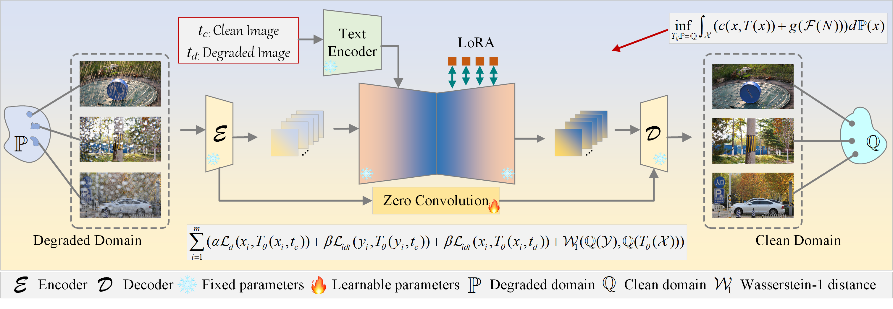
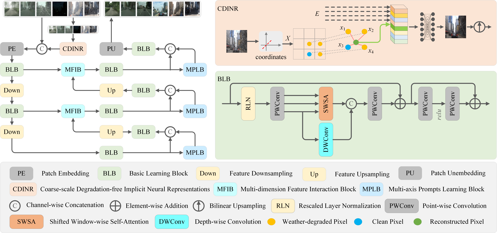
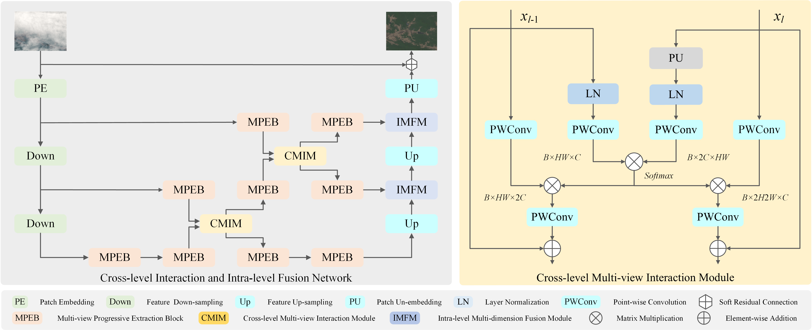
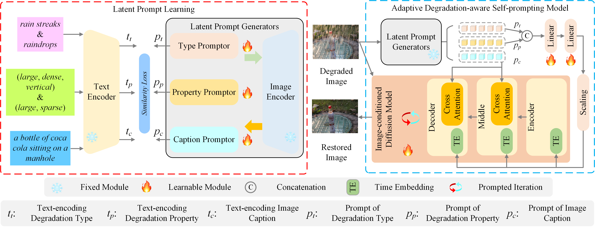
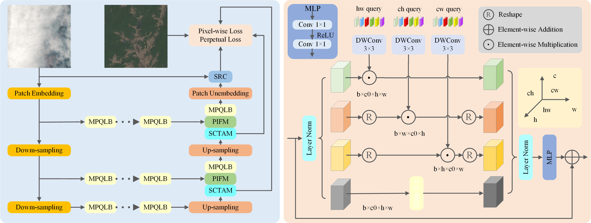
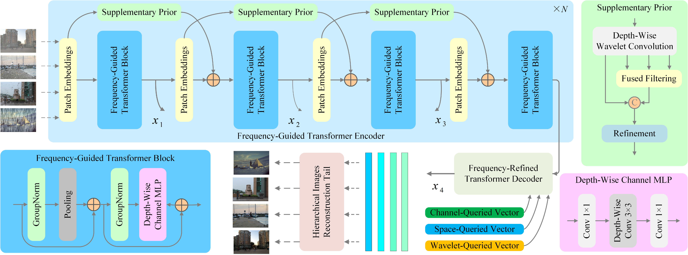

I am currently a final-year Ph.D. candidate at the Traffic Information Engineering and Control, School of Information Engineering, Chang'an University, supervised by Prof. Tao Gao (高涛) since Sep 2022. I worked as a visiting student at the School of Computing, Australian National University from Nov 2023 to Nov 2024, where I conducted research with Dr. Jing Zhang (张静). My research interests include computer vision, general image restoration, remote sensing image processing, unpaired learning, multi-modal learning.
|  |
Structure-preserving Frequency-regularized Text-guided Optimal Transport for Unpaired Rain Streaks and Raindrops Removal
Yuanbo Wen, Tao Gao*, Ziqi Li, Qianxi Zhang, Jing Zhang, Ting Chen, Lidong Liu
IEEE Transactions on Multimedia (TMM), 2026.
|
|  |
Multi-axis Prompt and Multi-dimension Fusion Network for All-in-one Weather-degraded Image Restoration
Yuanbo Wen, Tao Gao*, Jing Zhang, Ziqi Li, Ting Chen
AAAI Conference on Artificial Intelligence (AAAI), 2025.
|
|  |
Cross-Level Interaction and Intralevel Fusion Network for Remote Sensing Image Dehazing
Yuanbo Wen, Tao Gao*, Ting Chen, Ziqi Li, Mengkun Liu, Lidong Liu
IEEE Transactions on Geoscience and Remote Sensing (TGRS), 2025.
|
|  |
All-in-one Weather-degraded Image Restoration via Adaptive Degradation-aware Self-prompting Model
Yuanbo Wen, Tao Gao*, Ziqi Li, Jing Zhang, Kaihao Zhang, Ting Chen
IEEE Transactions on Multimedia (TMM), 2025.
|
 |
Unpaired Photo-realistic Image Deraining with Energy-informed Diffusion Model
Yuanbo Wen, Tao Gao*, Ting Chen
ACM International Conference on Multimedia (ACM MM Oral), 2024.
|
|  |
Encoder-free Multiaxis Physics-aware Fusion Network for Remote Sensing Image Dehazing
Yuanbo Wen, Tao Gao*, Jing Zhang, Ziqi Li, Ting Chen
IEEE Transactions on Geoscience and Remote Sensing (TGRS), 2023.
|
|  |
Frequency-oriented Efficient Transformer for All-in-one Weather-degraded Image Restoration
Tao Gao, Yuanbo Wen*, Kaihao Zhang, Jing Zhang, Ting Chen, Lidong Liu, Wenhan Luo
IEEE Transactions on Circuits and Systems for Video Technology (TCSVT), 2023.
|
Professional Services
Journal Reviewer
- IEEE Transactions on Image Processing (TIP)
- IEEE Transactions on Neural Networks and Learning Systems (TNNLS)
- IEEE Transactions on Multimedia (TMM)
- IEEE Transactions on Circuits and Systems for Video Technology (TCSVT)
- IEEE Transactions on Geoscience and Remote Sensing (TGRS)
- IEEE Transactions on Intelligent Transportation Systems (TITS)
- Pattern Recognition (PR)
- Expert Systems with Applications (ESWA)
- Neural Networks (NN)
- Information Sciences (INS)
- Knowledge-Based Systems (KBS)
- Engineering Applications of Artificial Intelligence (EAAI)
- IEEE Transactions on Instrumentation and Measurement (TIM)
- Neurocomputing (NEUCOM)
- IEEE Journal of Selected Topics in Applied Earth Observations and Remote Sensing (JSTARS)
- Pattern Recognition Letters
- Image and Vision Computing (IMAVIS)
- Computer Vision and Image Understanding (CVIU)
- Scientific Reports
- Journal of Visual Communication and Image Representation (JVCI)
- The Visual Computer (TVCJ)
- Applied Soft Computing Journal (ASCJ)
- ......
Conference Reviewer
- IEEE Conference on Computer Vision and Pattern Recognition (CVPR 2024, 2025, 2026)
- IEEE International Conference on Computer Vision (ICCV 2025)
- European Conference on Computer Vision (ECCV 2024, 2026)
- International Conference on Machine Learning (ICML 2025)
- Annual Conference on Neural Information Processing Systems (NeurIPS 2024-2025)
- International Conference on Learning Representations (ICLR 2025, 2026)
- AAAI Conference on Artificial Intelligence (AAAI 2026)
- International Joint Conference on Artificial Intelligence (IJCAI 2024, 2025, 2026)
- ACM International Conference on Multimedia (ACM MM 2024, 2025)
- British Machine Vision Conference (BMVC 2025, 2026)
- International Conference on Acoustics, Speech, and Signal Processing (ICASSP 2025, 2026)
- IEEE International Conference on Image Processing (ICIP 2024, 2025)
- ......